Sou desenvolvedora frontend e designer UX/UI. Uno tecnologia, criatividade e visão de produto para criar soluções funcionais e centradas nas pessoas.
Gosto de entender o problema antes de pensar na solução — e acredito que tecnologia e design funcionam melhor quando trabalham juntos.
Aqui você encontra uma seleção de projetos que fizeram parte da minha jornada, cada um trazendo novos desafios, aprendizados e experiências.
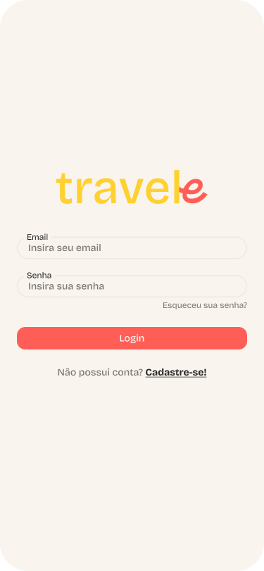
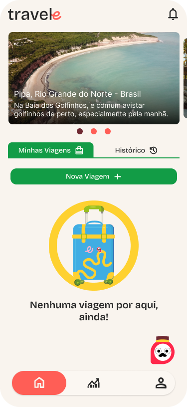
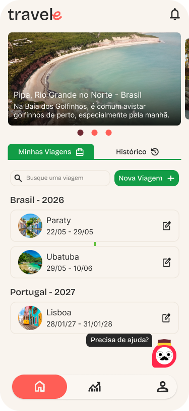
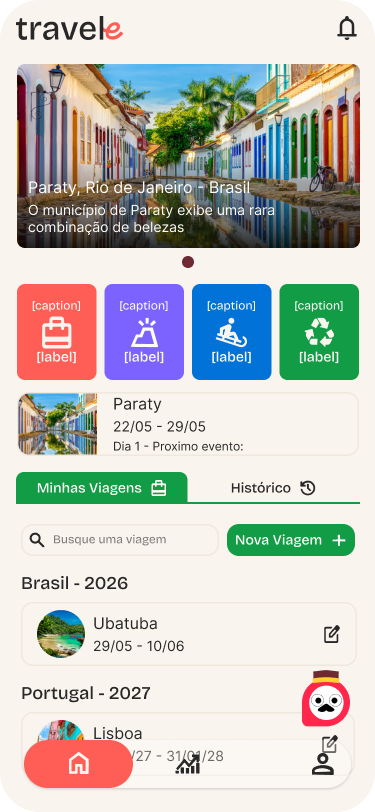
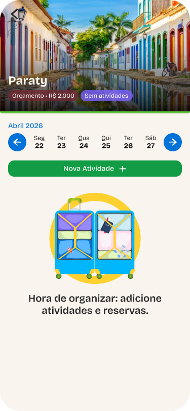
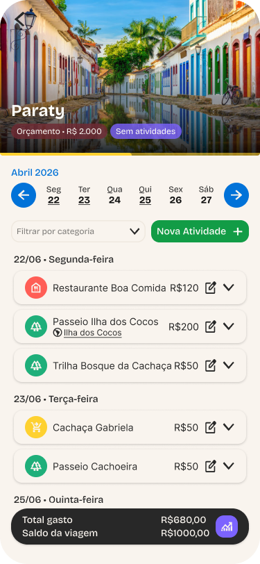
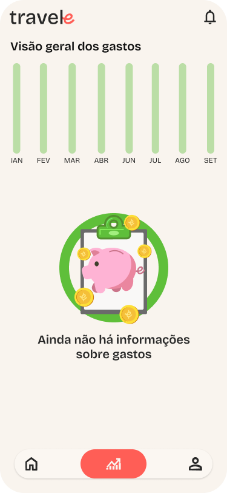
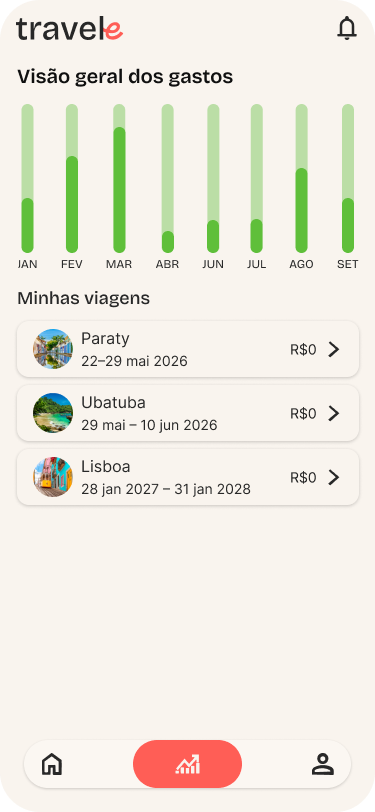
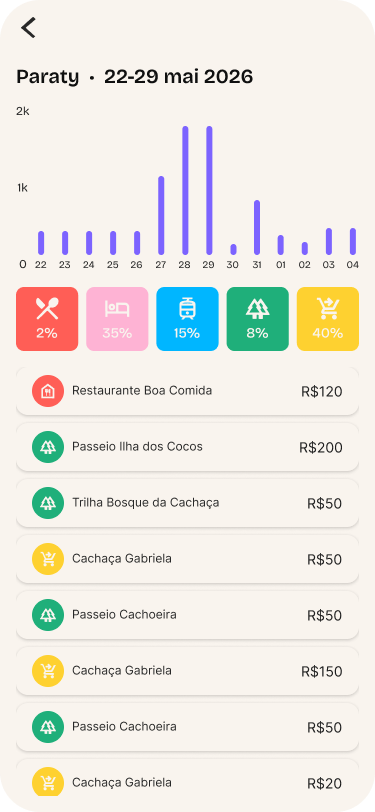
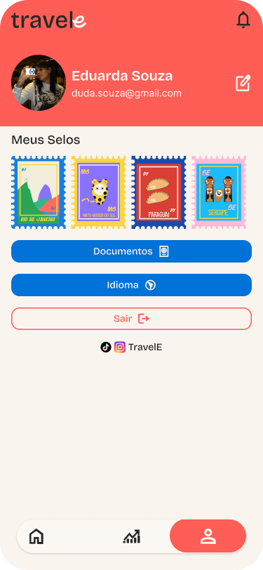
Aplicativo mobile para planejar e acompanhar viagens. O design foi pensado para ser simples e intuitivo, com componentes customizados, animações suaves e uma interface limpa. Desenvolvido com React Native e TypeScript. Ilustrações e identidade visual desenvolvidas por @the_andson.
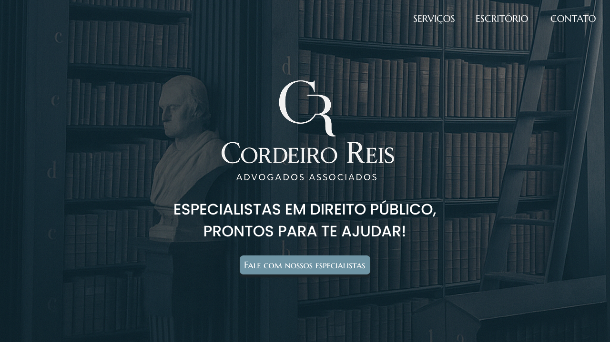
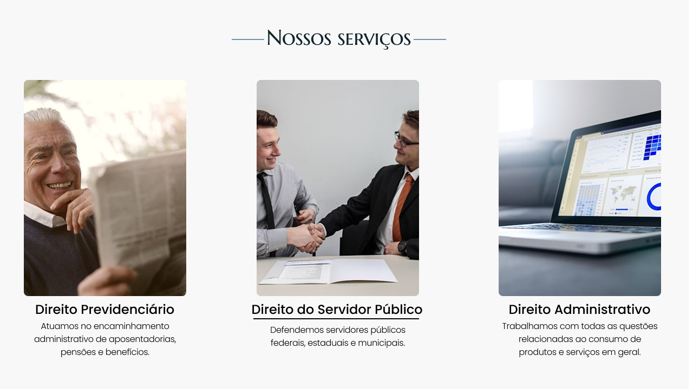
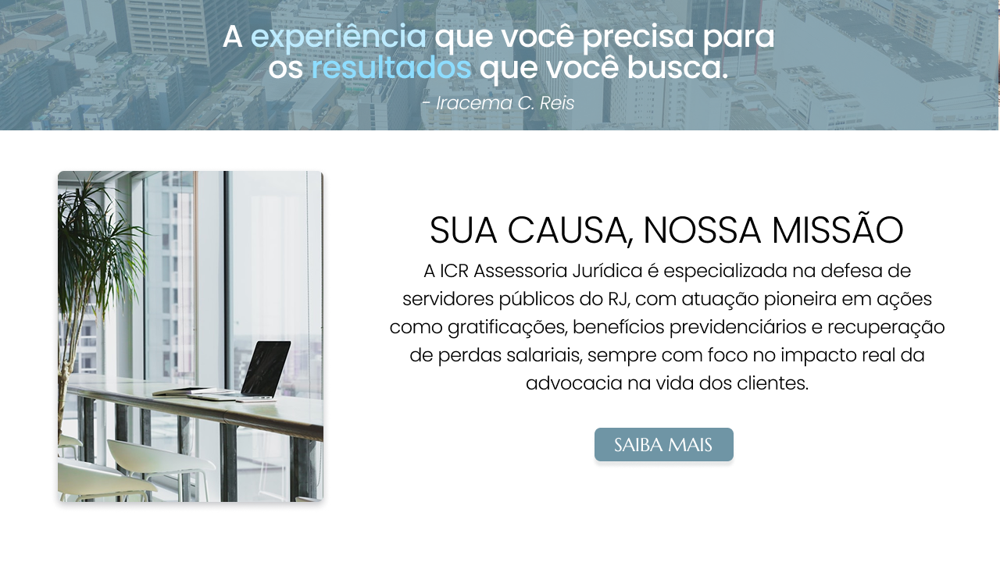
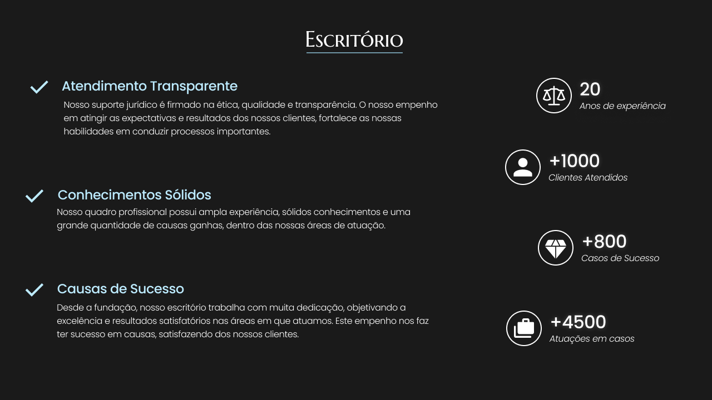
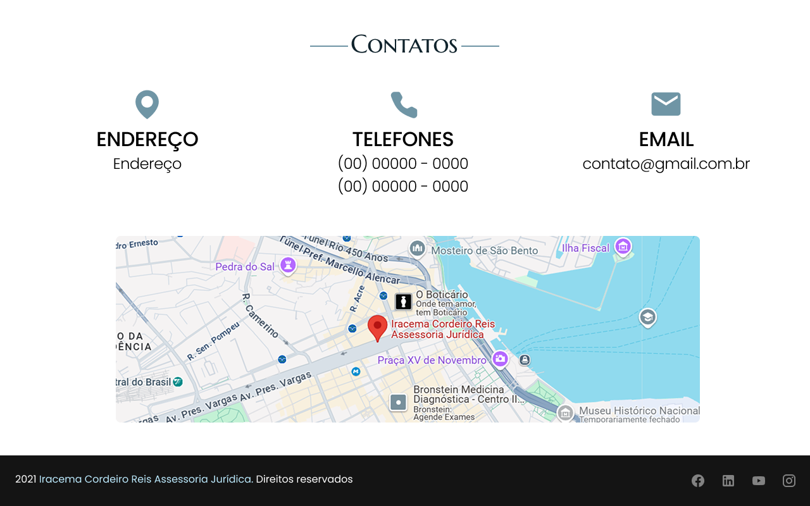
Design de uma landing page para o escritório de advocacia Cordeiro Reis. O layout segue o formato de rolagem contínua, com seções de serviços, escritório e contato. Projeto focado em transmitir profissionalismo e confiança, com uma navegação simples e direta. Desenvolvido no Figma.